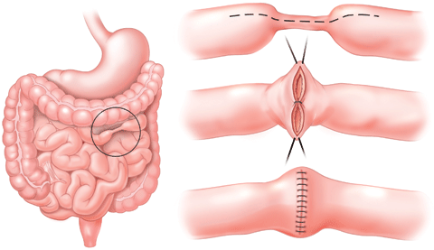

Abdominal Surgery For Crohn’s Disease (အစာအိမ်၊အူနံရံရောင်သောရောဂါခွဲစိတ်ကုသမှု)

အစာအိမ်အူလမ်းကြောင်းနံရံရောင်ရမ်းသော Crohn ရောဂါအတွက် ခွဲစိတ်ကုသမှု ဆိုတာဘာလဲ။
အစာအိမ်အူလမ်းကြောင်းနံရံရောင်ရမ်းသော Crohn ရောဂါအတွက် ခွဲစိတ်ကုသမှု ကို ရောဂါလက္ခဏာတွေသက်သာစေဖို့ ပြုလုပ်ကြတာဖြစ်ပါတယ်။ ဒီခွဲစိတ်မှုမှာတော့ အစာခြေလမ်းကြောင်းရဲ့ အစိတ်အပိုင်းတွေကို ဖယ်ရှားခြင်း၊ ပြောင်းလဲခြင်းတွေ ပါဝင်ပါတယ်။ ခွဲစိတ်မှုကို ဆေးကုသမှုနဲ့ အခြားကုသမှုတွေ မအောင်မြင်ရင် အသုံးပြုနိုင်ပါတယ်။
Crohn ရောဂါ အစာအိမ်အူလမ်းကြောင်းနံရံရောင်ရမ်းခြင်း ဖြစ်ပါတယ်။ သူဟာ အူနံရံကို ထူလာစေပြီး အစာဖြတ်သန်းသွားလာခြင်းကို ပိတ်ဆို့စေနိုင်ပါတယ်။ အူရဲ့ ထိခိုက်သွားတဲ့နေရာမှာ အစာတွေကိုစုပ်ယူနိုင်မှုကျဆင်းနိုင်ပါတယ်။ များသောအားဖြင့် အူသေးကို ထိခိုက်တတ်ပြီး အူဘယ်နေရာမှာ မဆို ရောင်ရမ်းနိုင်ပါတယ်။ လက္ခဏာ အချို့ကတော့
ဗိုက်နာခြင်း
ဝမ်းလျှောခြင်း
ကိုယ်အလေးချိန်ကျဆင်းခြင်း
ပင်ပန်းခြင်း
ဖျားနာခြင်း
ဆေးကုသမှုမရှိရင် လက္ခဏာတွေဟာ ပိုဆိုးလာပြီး ဆိုးကျိုးတွေကို ဖြစ်စေနိုင်ပါတယ်။ သင့်အတွက် မှန်ကန်တဲ့ ကုသမှုကို ရရှိဖို့ ဆရာဝန်နဲ့ ဆွေးနွေးသင့်ပါတယ်။
အစာအိမ်အူလမ်းကြောင်းနံရံရောင်ရမ်းသော Crohn ရောဂါအတွက် ခွဲစိတ်ကုသမှု ကို ဘာကြောင့် လုပ်ကြတာလဲ။
အူတစ်စိတ်တစ်ပိုင်းဟာ ပိတ်ဆို့နိုင်တာကြောင့် ခွဲစိတ်ကုသမှု လိုအပ်နိုင်ပါတယ်။ Crohn ရောဂါ မှာ အူရဲ့ အစိတ်အပိုင်းတွေဟာ ရောင်ရမ်းလိုက် ပြန်ကောင်းလိုက်နဲ့ ဖြစ်နေနိုင်ပါတယ်။ အချိန်ကြာလာတဲ့အခါမှာ ဒီအူအစိတ်အပိုင်းတွေဟာ မာလာပါတယ်။ အူပိတ်နေတဲ့သူတွေဟာ ပျို့အန်ခြင်း၊ ဗိုက်တင်းခြင်း၊ အစာစားချိန်မှာ အန်ခြင်း တွေ ဖြစ်လာနိုင်ပါတယ်။ တကယ်လို့ ပိတ်ဆို့ခြင်းဟာ ရုတ်တရက်ဆိုးလာခဲ့ရင် ခွဲစိတ်ကုသမှု လိုအပ်နိုင်ပါတယ်။
သင့်မှာအောက်ပါအချက်တွေ ရှိရင် ခွဲစိတ်ကုသဖို့ လိုအပ်နိုင်ပါတယ်။
လှိုဏ်ခေါင်းပေါက်ဖြစ်ခြင်း – အူနဲ့ အခြားအင်္ဂါတစ်ခု (ဥပမာ ဆီးအိမ်) မှာ လိုဏ်ခေါင်းပေါက်ခြင်း (fistula)
အူအတွင်း သွေးထွက်ခြင်း
အူမှာ အပေါက်ဖြစ်ခြင်း
စအိုအနီးတဝိုက် (သို့) အခြားနေရာမှာ ပြန်တည်နာဖြစ်ခြင်း
Abdominal surgery for Crohn’s disease ကိုမလုပ်ခင် ဘာတွေ သိထားသင့်သလဲ။
Crohn ရောဂါ အတွက် ခွဲစိတ်မှုမယူခင်မှာ အောက်ပါအချက်တွေကို သိထားသင့်ပါတယ်။
လက္ခဏာတွေဟာ ပြန်ကောင်းလာနိုင်ပါတယ်။ သင့်ဆရာဝန်ဟာ သောက်ဆေးတွေကို လျှော့ခြင်း၊ ရပ်ခြင်းတွေ ပြုလုပ်နိုင်ပါတယ်။
ဖြစ်နိုင်တဲ့ဆိုးကျိုးတွေကတော့ အူမှ စိမ့်ထွက်ခြင်း၊ ဗိုက် (သို့) ခွဲစိတ်ဒဏ်ရာအနီးတစ်ဝိုက်မှာ ရောဂါပိုးဝင်ခြင်း၊ ခြေထောက် (သို့) လက်မှာ သွေးခဲခြင်းနဲ့ အူအတွင်းမှာ ခဏတာ ပိတ်ဆို့ခြင်း တွေပဲ ဖြစ်ပါတယ်။ အူတိုသောရောဂါမှာ အူဟာ လိုအပ်တဲ့ အာဟာရဓါတ်တွေကို စုပ်ယူဖို့ တိုလွန်းတဲ့ အခြေအနေလဲဖြစ်နိုင်ပါတယ်။
Crohn ရောဂါ ကို သောက်ဆေးတွေဖြစ်တဲ့ meclizine၊ steroids၊ azathioprine နဲ့ infliximab တွေနဲ့ ကုသနိုင်ပါတယ်။ ဒီဆေးတွေမှာ ဆိုးကျိုးတွေရှိတာမို့ သင့်ဆရာဝန်နဲ့ တိုင်ပင်ဆွေးနွေးသင့်ပါတယ်။
ခွဲစိတ်ကုသမှုဟာ Crohn ရောဂါ ကိုပျောက်ကင်းအောင် မကုသနိုင်ဘူးဆိုတာ သိထားဖို့အရေးကြီးပါတယ်။ ရောဂါဖြစ်နေတဲ့ အူအစိတ်အပိုင်းကို ဖယ်ထုတ်လိုက်ပေမယ့် Crohn ရောဂါ ဟာ အူရဲ့အခြားနေရာမှာ ပြန်ဖြစ်လာနိုင်ပါတယ်။
Crohn’s disease အတွက်ခွဲစိတ်မှုပြုအပြီးမှာ နောက်ဆက်တွဲဆိုးကျိုးတွေကတော့
အစာအိမ် ရောဂါပိုးဝင်ခြင်း
အူသေးဟာ အစားအစာ (သို့) အမာရွတ်ကြောင့် ပိတ်ဆို့နိုင်ပါတယ်။ အစားအသောက်ကြောင့် ပိတ်ဆို့ခဲ့ရင် ဒါဟာ ခဏတာသာဖြစ်ပြီး အစာဟာ အူတစ်လျှောက်ဆင်းသွားတာနဲ့ သက်သာသွားမှာဖြစ်ပါတယ်။ တကယ်လို့ ၄-၆ နာရီအတွင်း စွန့်ပစ်ပစ္စည်းတစ်ခုမှ မသွားပဲ ဗိုက်နာပြီး ပျို့အန်ချင်နေတယ်ဆိုရင် ဒါဟာ ပိတ်ဆို့မှု ဖြစ်နိုင်ပါတယ်။ ဒီလက္ခဏာတွေ ဖြစ်လာခဲ့ရင် ဆရာဝန်ကို ချက်ချင်း ပြောပြသင့်ပါတယ်။
အူသေးပိတ်ဆို့ခြင်း။ ဒါဟာလည်း ဗိုက်နာခြင်း၊ ပျို့အန်ခြင်း၊ ဗိုက်အောင့်ခြင်းတွေ ဖြစ်နိုင်ပါတယ်။
တင်ပါးဆုံတွင်းအင်္ဂါပြည်တည်နာ- ဒီဆိုးကျိုးကတော့ အဖြစ်နည်းပြီး အခြားကုသမှု လိုအပ်ပါတယ်။
ဒီခွဲစိတ်ကုသမှုမပြုလုပ်ခင်မှာ ကောင်းကျိုးဆိုးကျိုးတွေကို သိထားဖို့ လိုအပ်ပါတယ်။ တကယ်လို့ မေးခွန်းတွေ ရှိခဲ့ရင် ဆရာဝန်နဲ့ ခွဲစိတ်ဆရာဝန်ကို တိုင်ပင်ဆွေးနွေးနိုင်ပါတယ်။
Abdominal surgery for Crohn’s disease တွေကို ဘယ်လိုပြင်ဆင်သင့်သလဲ။
ဒီခွဲစိတ်မှုကို မေ့ဆေးနဲ့ ပြုလုပ်မှာဖြစ်ပါတယ်။ မေ့ဆေးဟာ အစာခြေလမ်းကြောင်းနဲ့ အသက်ရှူလမ်းကြောင်းကို တင်းကျပ်မှုလျော့စေပြီး အစာတွေနဲ့အက်စစ်တွေကို အစာအိမ်အတွင်းနဲ့ အဆုတ်အပြင်မှာ နေစေပါတယ်။ ဒါကြောင့် ခွဲစိတ်မှုမပြုခင်မှာ ဘယ်အချိန်မှာ စားသောက်မှု ရပ်သင့်တယ်ဆိုတဲ့ ဆရာဝန်ညွှန်ကြားချက်တွေကို လိုက်နာဖို့အရေးကြီးပါတယ်။
အခြေအနေအတော်များများမှာတော့ ခွဲစိတ်မှုမစတင်မီ ၆ နာရီလောက်စောပြီး အစာစားခြင်းကို ရပ်သင့်ပါတယ်။ ခွဲစိတ်မှုမပြုလုပ်မီ နာရီအနည်းငယ်အထိ အရည်ကို သောက်နိုင်ပါတယ်။
အစာမစားရတဲ့အချိန်အတွင်းမှာ အချို့ဆေးတွေကို ရေအနည်းငယ်နဲ့သောက်ဖို့ ဆရာဝန်က ညွှန်ကြားနိုင်ပါတယ်။ သင့်ဆရာဝန်နဲ့ ဆေးတွေအကြောင်းကို ဆွေးနွေးနိုင်ပါတယ်။
နေ့စဉ်သောက်နေကျ ဆေးတွေ၊ ဖြည့်စွက်စာတွေ၊ သင့်မှာရှိနေတဲ့ ကျန်းမာရေးအခြေအနေတွေအကြောင်းကို ခွဲစိတ်မှုမပြုလုပ်ခင် သေချာစွာ ဆွေးနွေးသင့်ပါတယ်။
Abdominal surgery for Crohn’s disease ပြုလုပ်နေစဉ်မှာ ဘယ်လို ဖြစ်မှာလဲ။
ခွဲစိတ်မှုဟာ တည်နေရာနဲ့ ရောဂါပြင်းထန်မှုပေါ်မူတည်ပါတယ်။ ခွဲစိတ်မှုအမျိုးအစားပေါင်း များစွာ ရှိပါတယ်။ သူတို့တွေကတော့
ကျဉ်းသော အပိုင်းကို ပြုပြင်ခြင်း (Stricture plasty) – ဒီခွဲစိတ်မှုကတော့ ရောဂါကြောင့်ကျဉ်းနေတဲ့ အူသိမ်ရဲ့ အစိတ်အပိုင်းကို ကျယ်အောင်ပြုလုပ်ပေးတာဖြစ်ပါတယ်။ အူကို ဖြတ်ထုတ်ခြင်း မပါဝင်ပါဘူး။
Resection (ဖြတ်ထုတ်ခြင်း) – ရောဂါဖြစ်နေတဲ့ အူကို ဖြတ်ထုတ်လိုက်တာ ဖြစ်ပါတယ်။
အူမကြီးဖယ်ထုတ်ခြင်း (Colectomy)- အူမကြီးကို ဖယ်ထုတ်လိုက်တာဖြစ်ပါတယ်။ အစာဟောင်းအိမ် မပါဝင်ပါဘူး။ သူ့ကို အူသိမ်နဲ့ ဆက်ထားတာ ဖြစ်နိုင်ပါတယ်။
အူမကြီးရောအစာဟောင်းအိမ်ပါဖယ်ထုတ်ခြင်း (proctocolectomy) – ဒီခွဲစိတ်မှုဟာ အူမကြီးရော၊ အစာဟောင်းအိမ်ပါ ဖယ်ရှားခြင်း ဖြစ်ပါတယ်။ စွန့်ပစ်ပစ္စည်းတွေကို ကိုယ်ခန္ဓါပြင်ပမှာ အိတ်တစ်ခုနဲ့ဆက်ပြီး တစ်နေကုန် စွန့်ထုတ်မှာ ဖြစ်ပါတယ်။
သင့်မှာမေးခွန်းတွေ စိုးရိမ်ပူပန်မှုတွေရှိရင် ဆရာဝန်နဲ့ ဆက်သွယ်မေးမြန်းနိုင်ပါတယ်။
Abdominal surgery for Crohn’s disease လုပ်ပြီးသွားချိန် ဘာဖြစ်မှာလဲ။
ခွဲစိတ်မှုအပြီး ၅-၁၀ရက်လောက်ကြာရင် အိမ်ပြန်နိုင်ပါတယ်။ လုံးဝနေပြန်ကောင်းဖို့ကတော့ သုံးလလောက်ကြာမြင့်နိုင်ပါတယ်။ အောက်ပါအချက်တွေကို ပြုလုပ်သင့်ပါတ်ယ။
ခွဲစိတ်မှုအပြီး ဆရာဝန်ညွှန်ကြားချက်တွေကို လိုက်နာပါ။
မျှတစွာ စားသောက်ပါ။ အစားအသောက်မှာ အဓိက အုပ်စုတွေ ပါဝင်သင့်ပါတယ် (အစေ့အဆံ၊ အသီးအရွက်၊ နို့၊ အသား၊ပဲ) အူမကြီးဖြတ်ထုတ်ခြင်း သို့ အူမကြီးရောအစာဟောင်းအိမ်ပါဖယ်ထုတ်ခြင်း ပြုလုပ်အပြီး ပထမ ၆-၈ ပတ်မှာ အမျှင်ဓါတ်နည်းတဲ့ အစားအစာတွေကိုသာစားသုံး သင့်ပါတယ်။
လေ့ကျင့်ခန်း ပုံမှန်လုပ်ပါ။ ဒါဟာ သင့်ကို ပုံမှန်လုပ်ငန်းဆောင်တာတွေကို ပြန်လုပ်ဖို့ ကူညီပေးနိုင်ပါတယ်။ လေ့ကျင့်ခန်း စတင်မလုပ်ခင် ဆရာဝန်အကြံဉာဏ်ကို ယူသင့်ပါတယ်။
ရေမြောက်မြားစွာ သောက်ပါ။ ဒါဟာ သင့်ကိုရေဓါတ်ထိန်းပေးပါလိမ့်မယ်။ တစ်နေ့ကို ရေခွက် ၈-၁၀ ခွက်အထိသောက်ပါ။
ပုံမှန်အတိုင်းစားပါ။ အစားတွေကို မစားပဲနေခြင်း မပြုသင့်ပါဘူး။ ဗိုက်ဆာခြင်းဟာ လေကို ထုတ်ပေးနိုင်ပါတယ်။
တကယ်လို့ အစားအစာအသစ်တွေ စားတယ်ဆိုရင် အခြားအစားအစာတွေနဲ့ အနည်းငယ်ဆီရောစား သင့်ပါတယ်။ ဒါမှသာ သူတို့ဟာ အစာခြေရလွယ်သလားဆိုတာ သိရှိမှာဖြစ်ပါတယ်။
အစာနည်းနည်းနဲ့ မကြာခဏစားပါ။ သေချာစွာ ဝါးသင့်ပါတယ်။
ဆန်၊ အာလူး၊ ခေါက်ဆွဲ အစရှိတာတွေကို တစ်နေ့အနည်းဆုံးတစ်ခါ စားနိုင်ပါတယ်။
သကြားပါတဲ့အစားအသောက်တွေကို ကန့်သတ်ပါ။ သူတို့တွေဟာ ဝမ်းလျှောခြင်းကို ပိုဆိုးစေပါတယ်။
ဒီခွဲစိတ်မှုနဲ့ပတ်သက်ပြီး သိလိုတာရှိရင် ဆရာဝန်ကို မေးမြန်းနိုင်ပါတယ်။
Source- Dr . Phyu Mon Latt